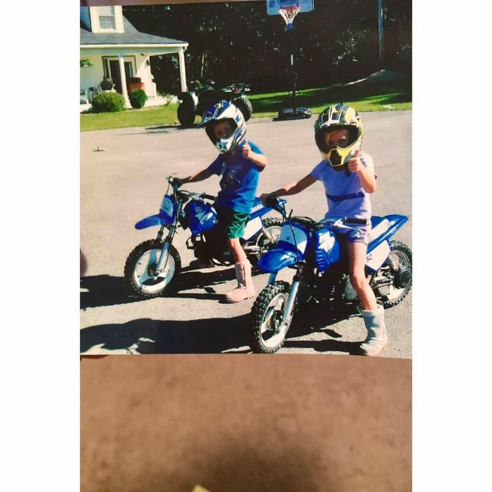

Growing up I rode four-wheelers, dirt bikes, bikes, snowmobiles, any thing with wheels on it. It let me explore the outdoors to an extent that most kids aren't able to do. Living in the little town of Cushing I live close to all my family. My moms sister, my aunt, lived right up the road, my grandmother lived down the river from us, other aunts, uncles, and cousins lived no longer than 15 minutes away.
Along with riding automobiles, I played sports all of my childhood, loved playing Bratz and with babies, coloring the driveway with chalk, and camping at my favorite local campground.
I had a childhood yellow lab named Duncan, he was the sweetest dog ever but he passed when he was 15 years old.
Being the youngest child and girl in the family I was fortunate to have good role models. My oldest sister, Hayley, who is now 24 was and still is the "boss" of all of us. Erika was and will always be the person I look up to the most, she is my second oldest siter who is now 23. Jillian, my identical twin sister, was enemy growing up but as time goes on is becoming more of a friend.
My dad, his brother, and his sister all own the Brooks Trap Mill. With him being the CEO of that and living in a house full of girls, he was often working or just spending time there.
Being raised this way has made me the way I am and I couldn't be more fortunate for my family and relatives and all the opportunities that have been given to me.
